Examples of using survextrap
Christopher Jackson chris.jackson@mrc-bsu.cam.ac.uk
2024-06-29
Source:vignettes/examples.Rmd
examples.RmdThis vignette gives a quick tour of the features of the
survextrap package, showing how to use it to fit a range of
survival models. See the cetuximab
case study for a more in-depth demonstration of how it might be used
in a typical health technology assessment.
See the README for the design principles of the package, and the methods vignette for technical details of the methods.
Examples
For these examples, we use a dataset of trial of chemotherapy for
colon cancer, provided as colon in the
survival package, with an outcome of recurrence-free
survival (etype==1), artificially censored at 3 years, and
restricted to a random 20% subset. This is provided as
colons in the survextrap package for
convenience.
library(survextrap)
library(ggplot2)
library(dplyr)
survminer::ggsurvplot(survfit(Surv(years, status) ~ 1, data=colons), data=colons)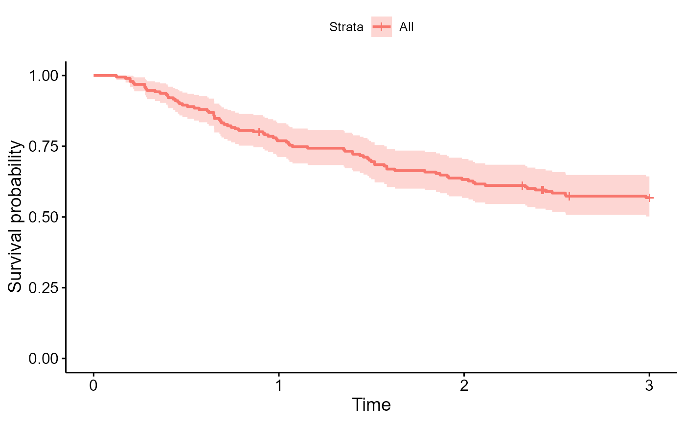
Simplest model: no external data
The following is the simplest, default model in the package fitted to the short-term trial data alone. No external data are supplied. After three years (the maximum follow up time of the short term data) the model assumes the hazard stays constant.
The plot shows the posterior median and 95% credible intervals for the survival and hazard functions. The spline adapts to give a practically perfect fit to the short-term data - note the Kaplan-Meier curve is obscured by the fitted posterior median. Although the model assumes the extrapolated hazard is constant, there is still a wide uncertainty interval around this constant value. This might be thought to be plausible.
nd_mod <- survextrap(Surv(years, status) ~ 1, data=colons, chains=1)
plot(nd_mod, show_knots=TRUE, tmax=5)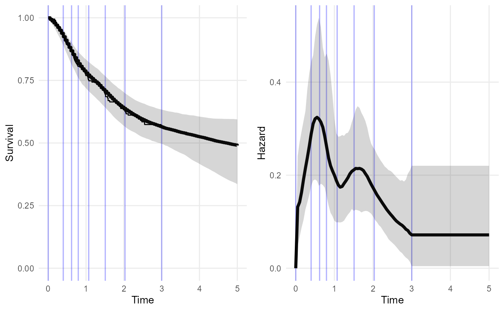
The spline knots are shown as blue lines. We could allow for the possibility of hazard changes beyond three years by placing spline knots beyond this point.
The mspline argument is used to control the spline. Here
we create an additional knot outside the data, at 4 years.
nd_mod2 <- survextrap(Surv(years, status) ~ 1, data=colons, chains=1,
mspline = list(add_knots=4))
plot(nd_mod2, tmax=5)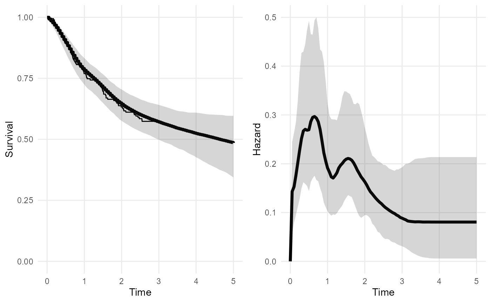
This increases the amount of uncertainty about the extrapolated survival and hazard. The extrapolations are likely to be sensitive to the choice of any knots placed outside the data.
A sensible guide is to place the upper knot at the latest time that you are interested in modelling. Beyond this time, you either think the hazard will not change, or any changes in the hazard do not matter for the purpose of the model.
The priors should then be chosen to give a low probability that the hazard varies outside the range thought reasonable, e.g. in terms of orders of magnitude. The package should provide a nice way to convert beliefs of this kind into priors.
But note that it is only necessary to extrapolate in this way, using knots and default priors, if there is no substantive information about the long term hazard!
In many practical situations of extrapolation in time-to-event models, we do have information. For human survival, we at least know that people do not tend to live much longer than 100 years. There are usually data from national agencies about mortality of general populations.
The idea of the package is to make this external information as explicit as possible - ideally in the form of data.
Note on model tuning
The survextrap function has various options which can be
used to fine-tune the basic model explained in the Methods vignette.
These options include the number of spline knots, the distribution on
the coefficients (\(p_i\)), and the
prior placed on the amount of smoothness in this curve \(\sigma\).
It will not usually be necessary to tune these to obtain a model that gives a survival curve that fits the observed data well, hence to estimate the restricted mean survival time well. However they may not be optimal in every case. See, for example, the cetuximab case study, where a tighter prior was placed on \(\sigma\), and fewer knots were used.
Cross-validation can be used to determine whether tuning gives an overall improvement in fit to the observed data (see “Model comparison” below).
Work is ongoing to give some empirical evidence, based on simulation studies, for what the most sensible default choice should be.
One particularly promising recent development in the package is the choice of a “random walk” prior to smooth the spline basis coefficients. Here this gives a smoother, more realistic-looking hazard curve than the one above that was based on the default (“exchangeable”) prior.
nd_modr <- survextrap(Surv(years, status) ~ 1, data=colons, chains=1,
smooth_model = "random_walk",
mspline = list(add_knots=4))
plot(nd_modr, tmax=5)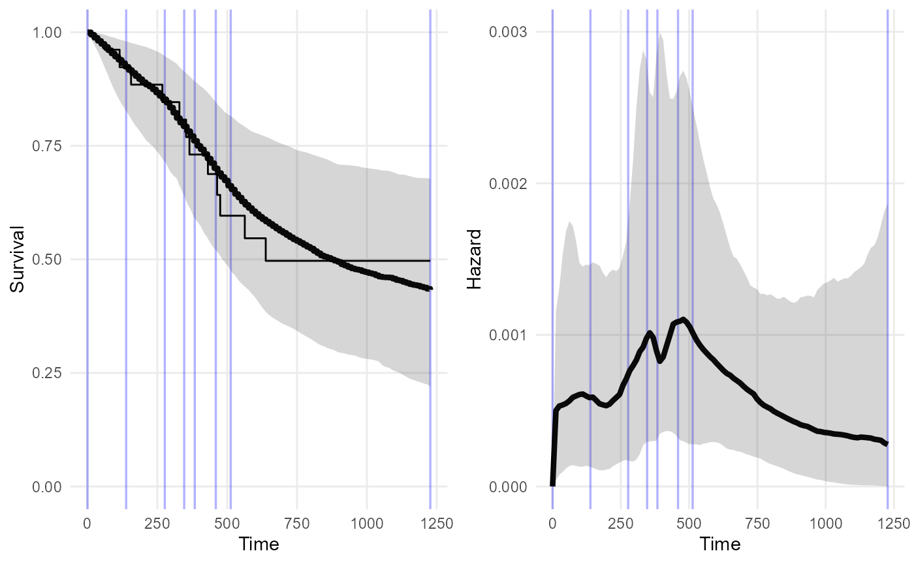
Note on computation settings
Most of the example models in this vignette have been specified using computational approximations which allow the models to be fitted more quickly, but at the cost of some inaccuracy. This has been done so that the vignettes build more quickly. Specifically:
chains=1was set in the examples above. This defines the number of chains used in the MCMC method to estimate the model. This option can be left out in practice - in which case, four MCMC chains are used, which is the default setting in therstanengine that the package uses, and is more reliable in practice. The number of iterations per chain can also be set with theiterargument, among other settings, seestan().Likewise, some models below are fitted using
fit.method="opt". This uses an approximation to the posterior. This is OK for producing point estimates of the parameters (the posterior mode is used - note this is likely to differ from the mean or median) but the uncertainty will be only roughly approximated. This is very useful for quick checks and model development.If using MCMC, make sure to check the diagnostics to ensure that the fit has converged - the values of
rhatin the summary output (e.g. below) should not be more than 1.05 for each parameter (see here for technical details).
## # A tibble: 6 × 8
## variable basis_num median lower upper sd rhat ess_bulk
## <chr> <dbl> <dbl> <dbl> <dbl> <dbl> <dbl> <dbl>
## 1 alpha NA -0.555 -0.789 -0.344 0.114 1.00 902.
## 2 coefs 1 0.0252 0.00826 0.0368 0.00731 1.01 421.
## 3 coefs 2 0.0266 0.00157 0.0688 0.0177 1.00 469.
## 4 coefs 3 0.0763 0.0221 0.193 0.0446 0.999 696.
## 5 coefs 4 0.0955 0.00724 0.233 0.0556 0.999 440.
## 6 coefs 5 0.0964 0.0268 0.217 0.0494 1.01 500.Divergent transitions
- If using MCMC, there may be a warning produced by Stan about
divergent transitions after warmup. This is a limitation of the sampling algorithm, and can happen when the posterior distribution is awkward to sample from. See the Stan documentation for technical details. If there are only one or two divergent transitions, the message is probably safe to ignore, but in any case the results should be examined to ensure they make sense. With lots of divergent transitions, it is safer to simplify the model, e.g. by using stronger priors or fewer spline knots.
Restricted mean survival
The function rmst calculates the restricted mean
survival time (RMST) from a fitted model. Uncertainty is expressed by
using the MCMC sample of the model parameters, and calculating the mean
(or RMST) for each draw, which produces a sample from the posterior
distribution. The posterior median and credible intervals are computed
by summarising this sample.
For particular combinations of parameter values, the mean under the
model nd_mod cannot be calculated
Here we compute the restricted mean survival time \(RMST(t)\) over three alternative time limits \(t\): 3, 10 and 1000 years. The upper 95% credible limit for \(RMST(1000)\) is very large.
Note:
nitercontrols how many iterations of the MCMC sample (previously drawn bysurvextrap) should be used to summarise the distribution. This is artificially set to a small number in this example so that it runs faster. This is OK for quick checks, but in practice for “final results”, you should check there are enough iterations to get summaries with the amount of precision you want, which will usually be 1000 or more.
## # A tibble: 3 × 5
## variable t median lower upper
## <chr> <dbl> <dbl> <dbl> <dbl>
## 1 rmst 3 2.20 2.04 2.34
## 2 rmst 10 5.42 4.14 6.38
## 3 rmst 1000 11.4 4.75 136.We do not really believe that the mean survival for this population can be this large. This is evidence that the fitted model is unrealistic, and we should have included external information to bound the estimates of the mean within plausible values. This can be done with external data.
Note also the
meanfunction can be used to get the mean survival time over an infinite time horizon. In practice, this is sometimes numerically unstable, resulting in an error message about a divergent integral. That would suggest that there is a substantial posterior probability that the mean is infinite. This is often a consequence of having not enough data to inform survival over an infinite horizon.
Custom posterior summaries
The summ_fns argument can be used to specify any custom
summaries of the posterior distribution of quantities in
survextrap models. For example, to use the mean, median and
interquartile range, rather than the median and 95% credible
interval:
rmst(nd_mod2, t = c(3,10,1000),
summ_fns = list(mean=mean, median=median,
~quantile(.x, c(0.25, 0.75))),
niter=50)## # A tibble: 3 × 6
## variable t mean median `25%` `75%`
## <chr> <dbl> <dbl> <dbl> <dbl> <dbl>
## 1 rmst 3 2.19 2.19 2.16 2.23
## 2 rmst 10 5.41 5.45 5.12 5.77
## 3 rmst 1000 31.4 14.3 8.12 24.9Extrapolation using long term population data
Suppose we judge that after 5 years, the survival of these patients will be the same as in the general population, and we have some data describing the annual survival rates of a population who are similar to this one, perhaps from matching to national statistics or registry data by age and sex. We would construct it something like this (though fake data are shown here).
extdat <- data.frame(start = c(5, 10, 15, 20),
stop = c(10, 15, 20, 25),
n = c(100, 100, 100, 100),
r = c(50, 40, 30, 20))This is passed as the external argument to
survextrap. Extra knots are added at 10 and 25 years, to
allow for the possibility that the hazard function will change shape
during the times covered by the external data. The external data are
coarser than the individual data, and it would be impossible to identify
complex hazard variations from them, so there is no point in using more
than a couple of extra knots. If there is a concern that this knot
choice may influence the results, then sensitivity analysis is
advised.
nde_mod <- survextrap(Surv(years, status) ~ 1, data=colons,
chains=1, external = extdat,
mspline = list(add_knots=c(4, 10, 25)))
plot(nde_mod)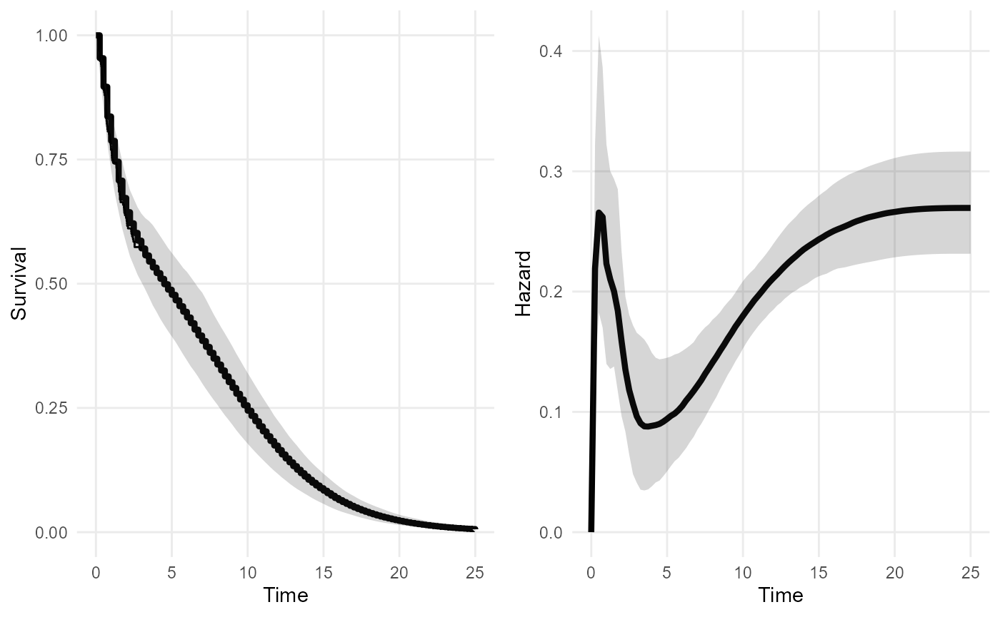
mean(nde_mod, niter=100)## # A tibble: 1 × 4
## variable median lower upper
## <chr> <dbl> <dbl> <dbl>
## 1 mean 6.03 5.00 6.94## # A tibble: 3 × 5
## variable t median lower upper
## <chr> <dbl> <dbl> <dbl> <dbl>
## 1 rmst 3 2.19 2.09 2.33
## 2 rmst 10 4.97 4.23 5.56
## 3 rmst 1000 6.03 5.00 6.94Including the external data gives a more confident extrapolation. The mean is finite. RMST converges to the mean, as it is supposed to.
Modelling differences between the trial and external data
The external data need not be from an identical population to one of the arms of the trial data. If we can assume that the datasets are related through a model, we can perform extrapolations under the assumptions of that model.
A simple example is where the hazards are assumed to be proportional
between the trial and external data. To implement this, we could define
a binary factor covariate called dataset to identify each
of the two datasets.
levs <- c("trial", "external")
colons$dataset <- factor("trial", level=levs)
extdat$dataset <- factor("external", level=levs)A proportional hazards model is defined by including this covariate
on the right hand side of the model formula in the
survextrap command. (See Covariates below for more about models with
covariates).
ndec_mod <- survextrap(Surv(years, status) ~ dataset, data=colons,
chains=1, external = extdat,
mspline = list(add_knots=c(4, 10, 25)))The effect of this covariate then describes the hazard ratio for the external data compared to the trial data - in this artificial example, no difference between the datasets is discernible.
## # A tibble: 1 × 9
## variable basis_num term median lower upper sd rhat ess_bulk
## <chr> <dbl> <chr> <dbl> <dbl> <dbl> <dbl> <dbl> <dbl>
## 1 hr NA datasetexternal 1.06 0.280 6.26 1.89 0.999 341.Different predictions are now available for the trial and external population, so in decision-making contexts you would need to consider which is more relevant.
rmst(ndec_mod, t=3, niter=100)## # A tibble: 2 × 6
## variable dataset t median lower upper
## <chr> <chr> <dbl> <dbl> <dbl> <dbl>
## 1 rmst trial 3 2.21 2.07 2.33
## 2 rmst external 3 2.26 0.706 2.75If there are more covariates observed in the datasets, these might be added to the model to explain any differences between the datasets. Though caution is required as always when extrapolating outside the data, to different populations as well as over time. To extrapolate we would need to assume that all parameter estimates are valid outside the data that they were estimated from.
Expert elicitation on the long term
Information about long term survival could be elicited from experts. To use this information about the model, we should also elicit the expert’s uncertainty.
For example, we ask the expert to consider a set of people who have survived for 10 years. How many of them would they expect to survive a further 5 years? Through some kind of formal elicitation process, they supply a best guess (median) of 30%, and a 95% credible interval of 10% to 50%.
Using standard techniques from elicitation (SHELF) we can interpret that as a \(Beta(6.6, 15.0)\) prior distribution for the survival probability.
## shape1 shape2
## 1 6.588104 14.96673We can interpret this as the posterior from having observed \(y=6\) survivors out of \(n=20\) people (recalling the posterior from a \(Binomial(y, n)\) combined with a vague \(Beta(0.5, 0.5)\) prior is \(Beta(y+0.5, n-y+0.5)\), and rounding \(n\) and \(y\) to whole numbers).
So the expert’s judgement is equivalent to the information in an external dataset of the form:
| Follow-up period | Number | ||
|---|---|---|---|
| Start time \(t\) | End time \(u\) | Alive at \(t\) | Still alive at \(u\) |
| 10 | 15 | 20 | 6 |
and we can use it in a survextrap model as follows:
extdat <- data.frame(start = c(10), stop = c(15),
n = c(20), r = c(6))
nde_mod <- survextrap(Surv(years, status) ~ 1, data=colons,
chains=1, external = extdat)
plot(nde_mod)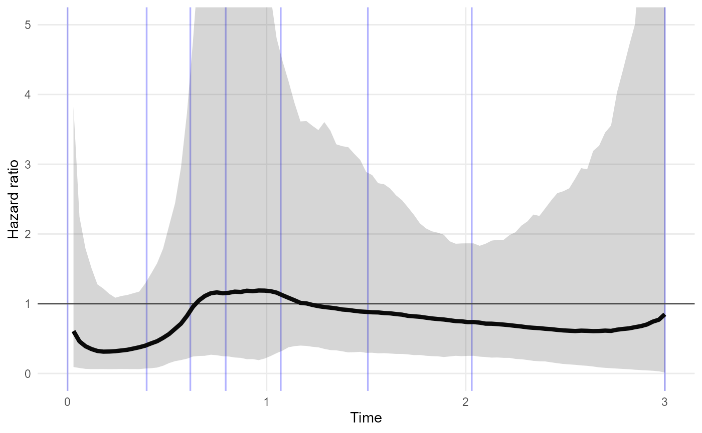
mean(nde_mod, niter = 100)## # A tibble: 1 × 4
## variable median lower upper
## <chr> <dbl> <dbl> <dbl>
## 1 mean 5.10 4.36 6.57There is still substantial uncertainty about the mean, even with this
level of information, but comparing to the second model above
(nd_mod2), it is better than no information at all. More
investigation of the role of the knot placement here (blue lines in the
figure) might be wise - particularly the one at 15 years.
This approach might be extended to include elicited values from
multiple time points, or considering multiple experts. In each case the
elicited information can be converted straightforwardly into an
aggregate table for use in survextrap.
Covariates
survextrap uses a proportional hazards model to
represent covariates by default. In the example here, we model survival
by treatment group rx, which is a factor with three levels.
First fit a standard Cox model:
## Call:
## coxph(formula = Surv(years, status) ~ rx, data = colons)
##
## coef exp(coef) se(coef) z p
## rxLev -0.3919 0.6758 0.2597 -1.509 0.1313
## rxLev+5FU -0.6740 0.5097 0.2800 -2.407 0.0161
##
## Likelihood ratio test=6.39 on 2 df, p=0.04088
## n= 191, number of events= 82Then fit a survextrap model and extract the log hazard
ratios. These agree with the Cox model - as expected, as we are using a
proportional hazards model with a very flexible baseline hazard
function.
rxph_mod <- survextrap(Surv(years, status) ~ rx, data=colons, chains=1, refresh=0)
summary(rxph_mod) |>
filter(variable=="loghr")## # A tibble: 2 × 9
## variable basis_num term median lower upper sd rhat ess_bulk
## <chr> <dbl> <chr> <dbl> <dbl> <dbl> <dbl> <dbl> <dbl>
## 1 loghr NA rxLev -0.394 -0.894 0.102 0.256 1.00 552.
## 2 loghr NA rxLev+5FU -0.658 -1.26 -0.124 0.287 1.00 792.The posterior median survival curves (thick lines) agree with the subgroup-specific Kaplan-Meier estimates (thin lines).
plot(rxph_mod, niter=100)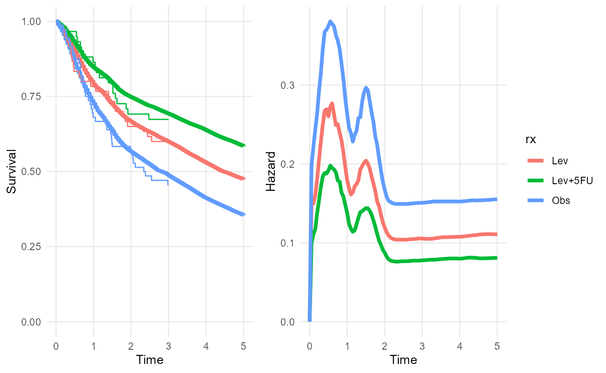
Any number of covariates, categorical or continuous, can be included.
We can also have covariates in the external data. If covariates are
included in the model formula, and an external dataset is supplied, then
we must specify covariate values for each row of the external dataset.
(If the covariates are factors, then they can be supplied as character
vectors in external, but the values should be taken from
the factor levels in the internal data [todo: this probably isn’t a
necessary restriction])
For example, the external data might be assumed to have the same
survival as the control group of the trial (corresponding to a value of
"Obs" for the variable rx).
extdat <- data.frame(start = c(5, 10), stop = c(10, 15),
n = c(100, 100), r = c(50, 40),
rx = "Obs")
rxphe_mod <- survextrap(Surv(years, status) ~ rx, data=colons,
chains=1, external = extdat, refresh=0)
rmst(rxphe_mod, niter=100, t=20)## # A tibble: 3 × 6
## variable rx t median lower upper
## <chr> <chr> <dbl> <dbl> <dbl> <dbl>
## 1 rmst Obs 20 5.05 4.02 6.16
## 2 rmst Lev 20 6.92 4.68 9.03
## 3 rmst Lev+5FU 20 8.70 5.95 11.1
plot(rxphe_mod, niter=100, tmax=5)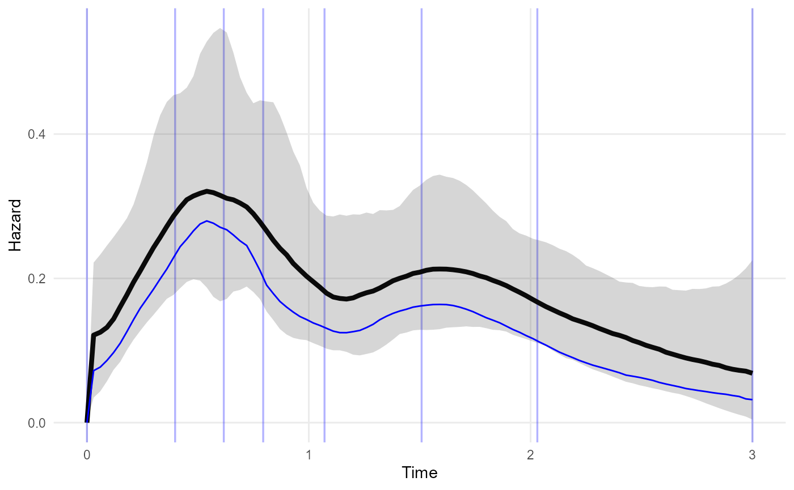
plot_hazard(rxphe_mod, niter=100, tmax=20)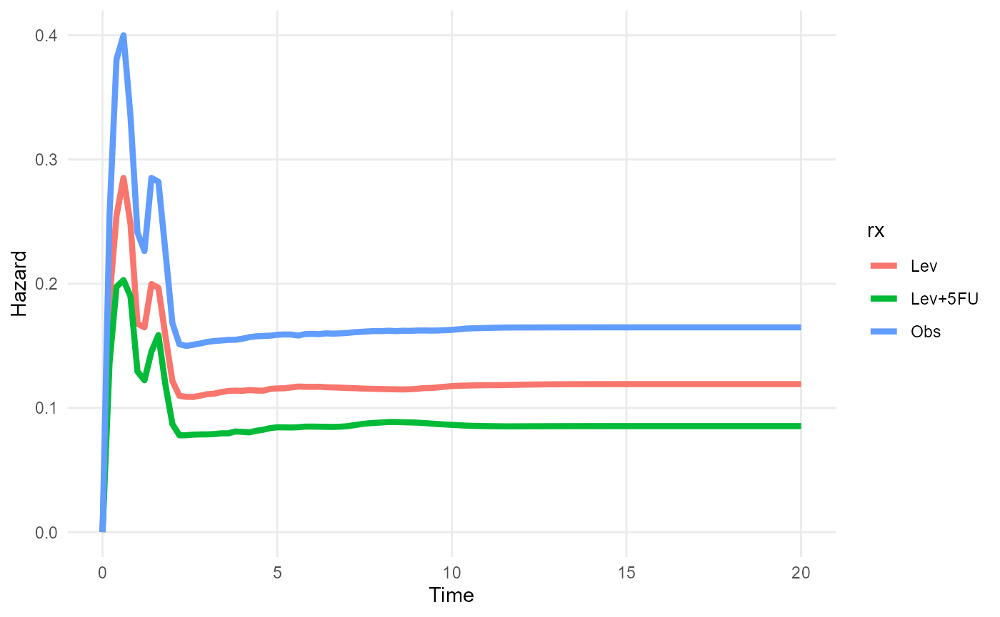
Covariate-specific outputs
After fitting a model that includes covariates, to present
covariate-specific outputs, a newdata data frame is
supplied to output functions such as rmst(),
survival() or hazard(). This contains one row
for each different covariate value (or combination of covariate values)
for which outputs are required, in this case, the Observation and
Lev+5FU treatment groups.
nd <- data.frame(rx = c("Obs","Lev+5FU"))
survival(rxph_mod, t=c(5,10), newdata=nd)## # A tibble: 4 × 5
## rx t median lower upper
## <chr> <dbl> <dbl> <dbl> <dbl>
## 1 Obs 5 0.349 0.225 0.505
## 2 Obs 10 0.173 0.0589 0.377
## 3 Lev+5FU 5 0.585 0.420 0.735
## 4 Lev+5FU 10 0.413 0.198 0.630Standardised outputs
In models with covariates, “standardised” outputs are defined by
averaging, or marginalising, over covariate values in some reference
population, rather than being conditional on a given covariate value. To
compute these, we first construct a data frame with one row for each
member of the reference population, and columns for the covariate
values. We then tell the output function to average the outputs over
this reference population, by applying the standardise_to
function to the population, and supplying the result as the
newdata argument.
ref_pop <- data.frame(rx = c("Obs","Lev+5FU"))
survival(rxph_mod, t = c(5,10), newdata = standardise_to(ref_pop))## # A tibble: 2 × 4
## t median lower upper
## <dbl> <dbl> <dbl> <dbl>
## 1 5 0.464 0.241 0.709
## 2 10 0.286 0.0720 0.599Here a reference population is defined that consists of 1 person in the Observation treatment group and 1 person in the Lev+5FU group. As expected, the marginal 5 and 10 year survival probabilities for this population are about half way between the treatment-specific estimates for these survival probabilities.
Notes on computation of standardised outputs
Only the distribution of covariate values in the reference population matters, and not the population size. For example, the same result would have been obtained here from a reference population with \(n\) people in every treatment group, for any \(n\).
If the reference population is larger, then computation will be slower. The default procedure involves concatenating multiple MCMC samples of \(R\) parameter values into one:
\[ (\theta^{(1)} | \mathbf{x}_1,...,\theta^{(R)}|\mathbf{x}_1), ..., (\theta^{(1)} | \mathbf{x}_M,...,\theta^{(R)}|\mathbf{x}_M) \]
where \(R\) is the number of MCMC
samples obtained in the original survextrap fit (4000 with
the current default number of chains and iterations used by
rstan), \(M\) is the size
of the reference population, and \(\mathbf{x}_j\) is the vector of covariate
values for the \(j\)th member of the
reference population. The output function is then evaluated for each
element of this concatenated sample, to obtain a sample of size \(R \times M\) from the posterior of the
standardised output. If this sample is large, this may be
computationally intensive, particularly if the output function is slow
to evaluate (e.g. the RMST, which uses numerical integration).
In the example above, there was only one covariate, which was categorical, and we just wanted a 50/50 balance of two groups. Therefore a reference population of size 2 was sufficient to describe the distribution of covariates. In more complex situations, e.g. with continuous covariates, we might want a larger reference population to characterise the distribution.
To save computation for standardised outputs with large reference populations, an alternative computational method is available. This works by drawing a random covariate value \(\mathbf{x}_r\) from the reference population for each MCMC iteration \(r\), and then evaluating the output function for the corresponding parameter value \(\theta^{(r)} | \mathbf{x}_r\). The resulting sample of outputs is then a sample of size \(R\) from the posterior of the standardised output:
\[ (\theta^{(1)} | \mathbf{x}_1,...,\theta^{(R)}|\mathbf{x}_R) \]
This alternative method is invoked by setting the
random=TRUE argument to standardise_to,
e.g.
survival(rxph_mod, t = c(5,10), newdata = standardise_to(ref_pop, random=TRUE))## # A tibble: 2 × 4
## t median lower upper
## <dbl> <dbl> <dbl> <dbl>
## 1 5 0.464 0.241 0.709
## 2 10 0.286 0.0720 0.599The results will then be dependent on the random number seed, so care
should be taken that enough MCMC iterations have been run in the
original survextrap call that the output is stable to the
required number of significant figures.
Non-proportional hazards model
The flexible non-proportional hazards model described in the methods vignette can be specified with
the nonprop argument. nonprop=TRUE gives all
covariates in the main model formula non-proportional hazards. A subset
of covariates can be given non-proportional hazards by passing a
different model formula as the nonprop argument.
rxnph_mod <- survextrap(Surv(years, status) ~ rx, data=colons, nonprop=TRUE, chains=1)
plot(rxnph_mod)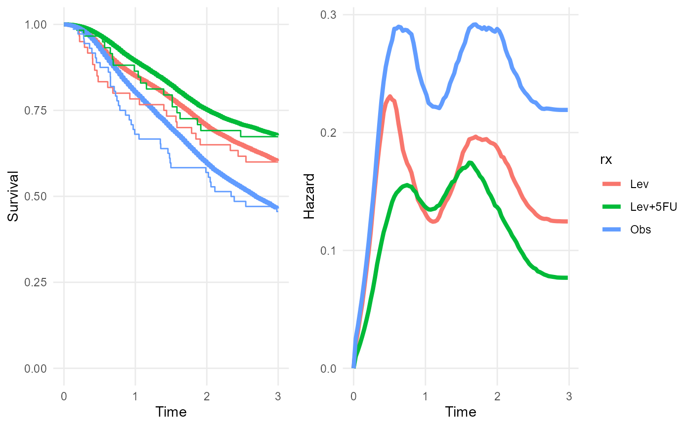
Note the non-constant separation between the posterior median hazard curves from the three treatment groups.
In this example, the sample size in each treatment group and time period is small, so this model is probably overfitted. While the posterior median survival seems to fit poorly to the Kaplan-Meier estimates in some regions, there is large uncertainty around these estimates that isn’t shown in these plots.
The non-proportional hazards model is experimental. In theory, it can
be “tuned” by changing the number of spline basis terms and the knot
positions (through the mspline argument to
survextrap), or by changing the prior on the parameter
\(\sigma^{(np)}_s\) that controls the
smoothness of the departures from proportional hazards
(prior_sdnp argument). But this has not been tested much in
practice.
If a plot of the posterior hazard ratio against time is desired, this
might be constructed by extracting samples from the posterior of the
hazard for different covariate values by using
hazard(..., sample=TRUE), converting to samples from the
hazard ratio, and then summarising and plotting.
The functions hazard_ratio() and
plot_hazard_ratio() can be used to calculate or plot the
ratio of hazards between two covariate values, as a function of time.
The covariate values are supplied in a data frame with two rows - all
covariates in the model should be included here (there is currently no
facility for standardised effect estimation).
nd <- data.frame(rx = c("Lev+5FU","Lev"))
plot_hazard_ratio(rxnph_mod, newdata=nd) +
coord_cartesian(ylim=c(0,5)) 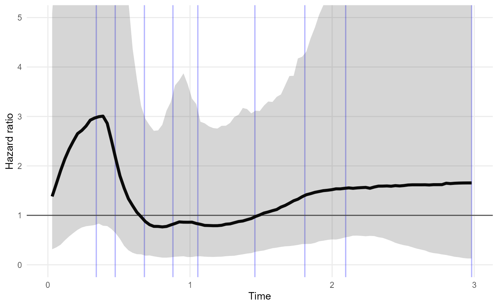
In this example, the credible interval for the Lev+5FU / Lev hazard ratio is wide, and does not suggest that the hazard ratio is time-varying. This model may be overfitted around time 0.5 to 1 - fewer knots may be preferable if this model is intended for description of hazard trajectories.
Treatment effect waning models
These are described in their own vignette.
Model comparison
The leave-one-out cross-validation method of the loo package is
automatically implemented for every model fitted with
survextrap, unless survextrap(..., loo=FALSE)
is used.
The cross-validation results are returned in the loo and
loo_external component of the fitted model object,
describing the fit of the model to the individual and external data
respectively. For the external data, “leave one out” refers to leaving
out a single individual’s outcome from the aggregate totals.
See the loo vignette for some information about how to interpret these.
Roughly, lower values of the looic statistic indicate
models with better predictive ability. This is demonstrated here by
comparing the proportional hazards model with the non-proportional
hazards model. looic is lower for the proportional hazards
model, suggesting that the non-proportional hazards model is worse for
prediction. It is likely to be excessively complicated for the data.
rxph_mod$loo##
## Computed from 1000 by 191 log-likelihood matrix
##
## Estimate SE
## elpd_loo -212.5 10.0
## p_loo 8.2 0.5
## looic 425.0 20.0
## ------
## Monte Carlo SE of elpd_loo is 0.1.
##
## All Pareto k estimates are good (k < 0.5).
## See help('pareto-k-diagnostic') for details.
rxnph_mod$loo##
## Computed from 1000 by 191 log-likelihood matrix
##
## Estimate SE
## elpd_loo -232.8 11.5
## p_loo 29.4 2.5
## looic 465.6 23.1
## ------
## Monte Carlo SE of elpd_loo is NA.
##
## Pareto k diagnostic values:
## Count Pct. Min. n_eff
## (-Inf, 0.5] (good) 187 97.9% 247
## (0.5, 0.7] (ok) 3 1.6% 429
## (0.7, 1] (bad) 1 0.5% 39
## (1, Inf) (very bad) 0 0.0% <NA>
## See help('pareto-k-diagnostic') for details.If the warning message
"Some Pareto k diagnostic values are too high" appears
after calling survextrap, it was produced by the
loo package. The fitted model is still valid, but the
cross-validation statistics may not be. See the loo
vignette and the references from there for more explanation. This
happens for the non-proportional hazards model here - cross-validation
failed for 2 out of the 191 observations in the data.
Cure models
The package provides a simulated dataset curedata with
an obvious cure fraction. Here we fit the cure models that are described
in the methods vignette.
The probability of cure for x=0 is 0.5, and for
x=1 0.622 (so the log odds ratio is 0.5). The uncured
fraction follows a Weibull(1.5, 1.2) survival distribution.
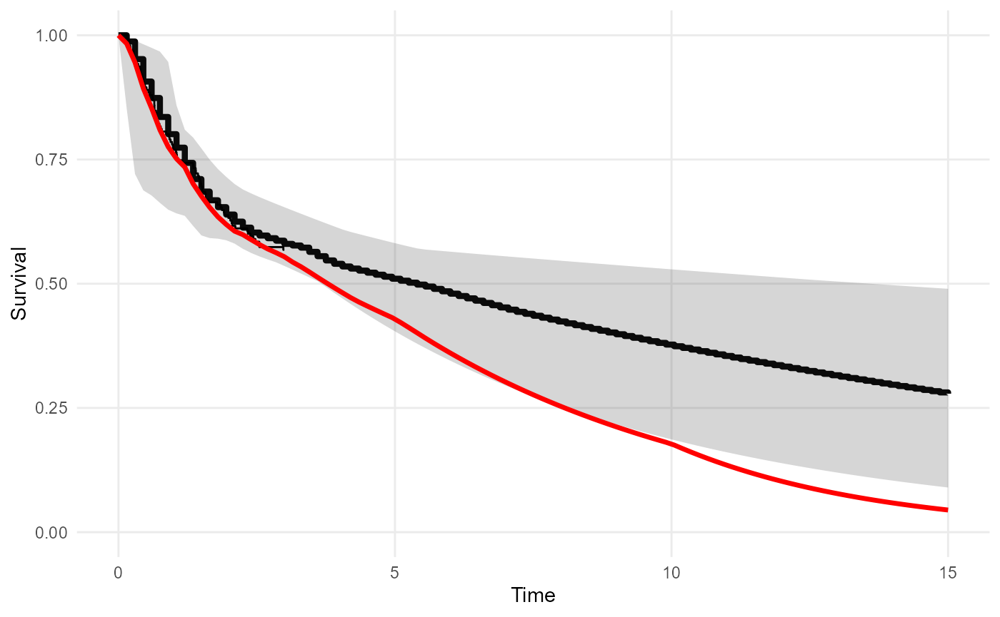
noncure_mod <- survextrap(Surv(t, status) ~ 1, data=curedata, fit_method = "opt")
plot_survival(noncure_mod,tmax=5) 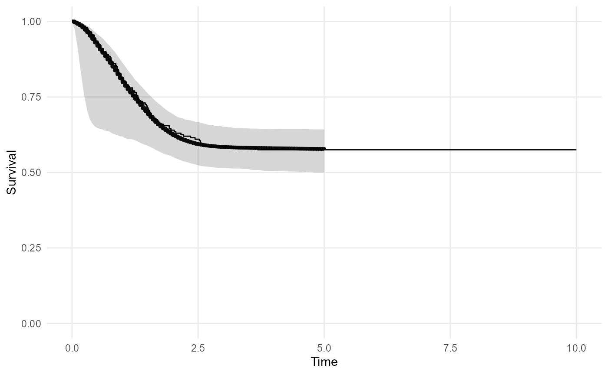
cure_mod <- survextrap(Surv(t, status) ~ 1, data=curedata, chains=1, cure=TRUE, iter=1000)
plot(cure_mod, tmax=10, niter=20) 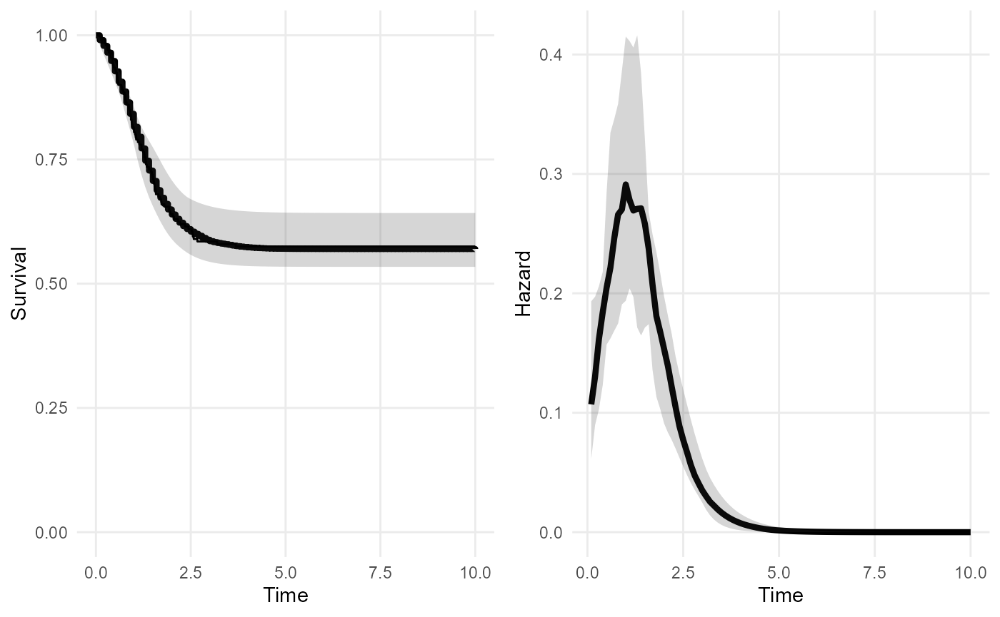
Covariates on the cure fraction can be supplied by putting a formula
in the cure argument. These will be modelled using logistic
regression.
curec_mod <- survextrap(Surv(t, status) ~ 1, data=curedata, cure=~x, fit_method="opt")
summary(curec_mod) %>%
filter(variable %in% c("pcure", "logor_cure", "or_cure"))## # A tibble: 3 × 10
## variable basis_num term mode median lower upper sd rhat ess_bulk
## <chr> <dbl> <chr> <dbl> <dbl> <dbl> <dbl> <dbl> <dbl> <dbl>
## 1 pcure NA NA 0.481 0.481 0.382 0.584 0.0495 1.00 2007.
## 2 logor_cure NA x 0.778 0.782 0.205 1.34 0.291 1.00 1995.
## 3 or_cure NA x 2.18 2.19 1.23 3.81 0.688 1.00 1995.In this summary, pcure is the probability of cure at a
value of 0 for the covariate x.
Additive hazards / relative survival models
To implement an “additive hazards” (“relative survival”) model (see the methods vignette), the background hazard can be supplied alongside the data. This can be done in two ways - note the meaning of the predictions from the model depends on which of these specifications was used.
Background hazard defined at all times
The recommended way is to build a data frame that defines the value
of the background hazard at all times. The hazard is assumed to be a
piecewise-constant function. The data frame has columns
"hazard" and "time", and each row defines the
value of the hazard between the current time and the next time. The
first value of "time" should be 0, and the final row of the
data defines the hazard for all times greater than the last time. For
example:
bh <- data.frame(time=c(0, 3, 5, 10),
hazard=c(0.01, 0.05, 0.1, 0.2))When supplied to survextrap, this defines a full model
for overall hazard at any time.
In the recurring example model, suppose we have external data about
the background hazard that we use to extrapolate survival up to 15
years. This is represented in the data frame bh defined
above.
The “cause-specific” hazard represents death from colon cancer, and the “background” hazard represents deaths from other causes. We suppose that colon cancer deaths dominate in the shorter term covered by the individual data (0-3 years), but the risk of death from other causes increases gradually after that.
We fit one model mod that excludes this information, and
another model that includes it.
mod <- survextrap(Surv(years, status) ~ 1, data=colons, fit_method="opt")
mod_bh <- survextrap(Surv(years, status) ~ 1, data=colons, fit_method="opt", backhaz=bh)The posterior medians of the survival and hazard functions under
mod_bh are overlaid on the posterior distributions from
mod. The fitted survival and hazard in the short term
agrees under both models, but the survival is worse in the long term
when the increase in the background hazard at times 3, 5 and 10 is
accounted for.
plot_survival(mod, tmax=15, niter=20) +
geom_line(data=survival(mod_bh, tmax=15, niter=20), aes(y=median, x=t), col="red", lwd=1.2)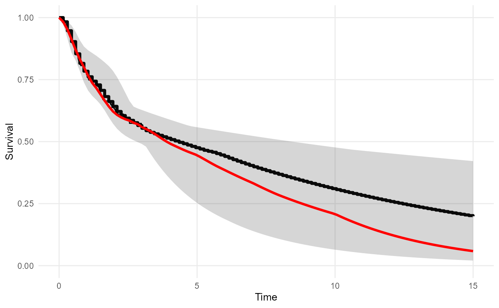
plot_hazard(mod, tmax=15, niter=20) +
geom_line(data=hazard(mod_bh, tmax=15, niter=20), aes(y=median, x=t), col="red", lwd=1.2)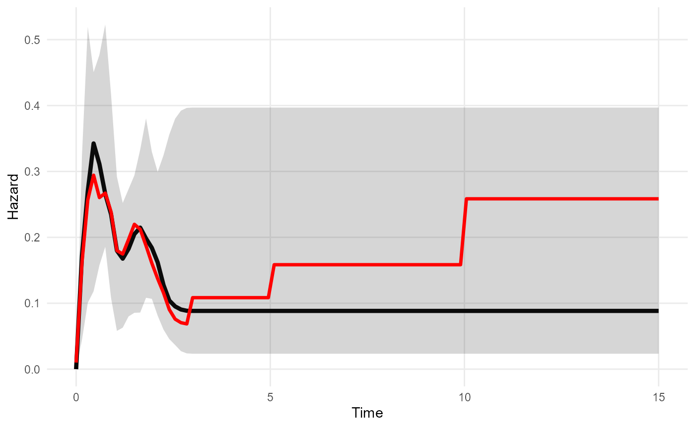
Note that this kind of relative survival model can also be used
together with a cure model. If both cure and
backhaz are specified, then the cure model is assumed to
apply to the cause-specific hazard. This will define a model where the
cause-specific hazard approaches zero, hence the overall hazard is
increasingly dominated by the background causes of death, as time
increases.
Stratified background hazards
Commonly, population mortality statistics are available by age and
sex. If the same stratifying variables are recorded in the survival data
(either the trial or external data) then survextrap allows
the strata to be matched with the appropriate stratified background
hazards.
A simple example is shown here. Suppose the following background
hazard data are available, where people aged over 70 have 1.2 times the
mortality rate of the under-70s. The year of age is recorded in the
trial data colons, which we convert to an over/under 70
binary age group.
bh_strata <- data.frame(time = rep(bh$time, 2),
hazard = c(bh$hazard, bh$hazard*1.2),
agegroup = rep(c("Under 70", "Over 70"),each=4))
colons$agegroup <- cut(colons$age, breaks=c(0,70,Inf),
right=FALSE, labels=c("Under 70","Over 70"))
bh_strata## time hazard agegroup
## 1 0 0.010 Under 70
## 2 3 0.050 Under 70
## 3 5 0.100 Under 70
## 4 10 0.200 Under 70
## 5 0 0.012 Over 70
## 6 3 0.060 Over 70
## 7 5 0.120 Over 70
## 8 10 0.240 Over 70Then to run survextrap with a stratified background
hazard, we indicate the names of the stratifying variables in the
backhaz_strata argument. These variables must exist in both
data and backhaz (and external if
this is provided). Every row in data must have a row in
backhaz with a matching stratum value. (Note there can be
multiple stratifying variables, in which case we would specify, for
example backhaz_strata = c("agegroup","sex")).
mod_bhs <- survextrap(Surv(years, status) ~ 1, data=colons, fit_method="opt",
backhaz=bh_strata, backhaz_strata="agegroup")To present predictions from a model with a stratified background
hazard (e.g. RMST, hazard, survival), a newdata should be
supplied to indicate which strata to present the results for, in the
same manner as for models with covariates. Here the fitted hazard
function reflects the increased long-term risk for over-70s.
nd <- data.frame(agegroup = c("Over 70", "Under 70"))
plot_hazard(mod, tmax=15, ci=FALSE) +
geom_line(data = hazard(mod_bhs, newdata=nd, tmax=15, niter=300),
aes(y=median, x=t, col=agegroup), lwd=1.2) +
ylim(0,0.5)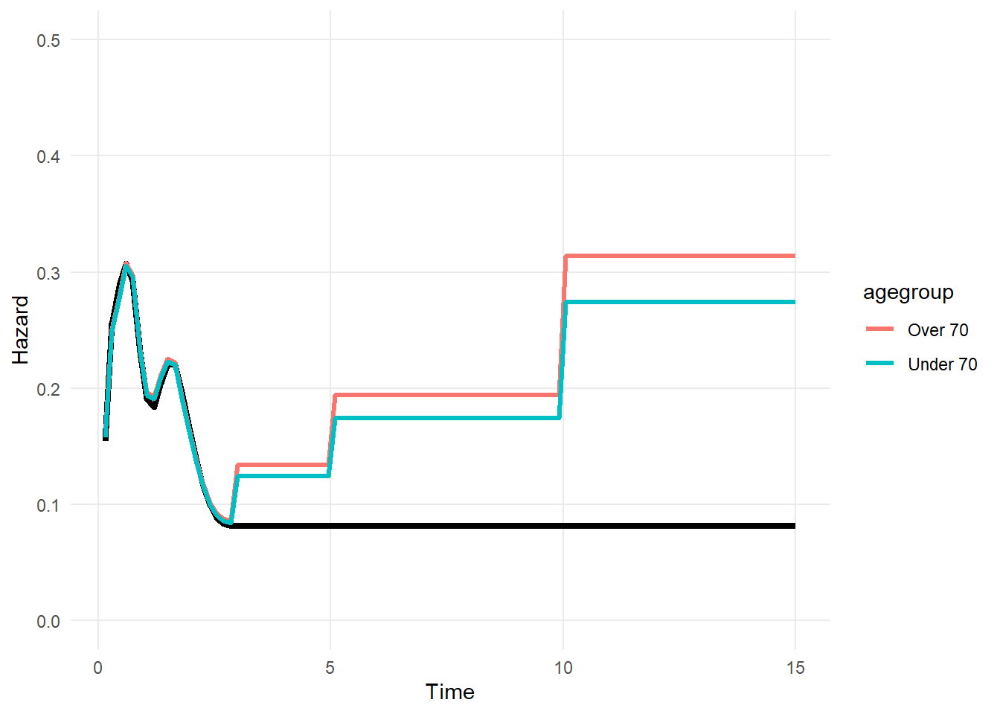
Background hazard only defined at the event times
An alternative approach is to supply the background hazard as an
extra column alongside the data. The name of this column is supplied
(unquoted) as the backhaz argument to
survextrap. This relies on fewer assumptions about the
background hazard, since only the hazard at the event times is used, and
the background hazard outside the time spanned by the individual data is
unspecified.
Here the background hazard at each event time is defined in an extra
column "bh" in the individual data.
colonsb <- colons
colonsb$bh <- rep(0.05, nrow(colons))
modb <- survextrap(Surv(years, status) ~ 1, data=colonsb, backhaz="bh", chains=1)As in the previous specification, the parameter estimates in the fitted model describe the excess or cause-specific hazard for the study population. However, the predictions from the model (e.g. fitted survival, hazard or mean survival) have a different meaning here. Previously they described the overall hazard - we were able to do this because we defined the hazard at all times. But now they describe the excess hazard for the study population - we cannot predict overall survival in general here, since we did not define the background hazard at all times.
In the example below, the excess hazard from the relative hazard model (with constant background 0.05) is shown in blue below the fitted overall hazard from a model with no background adjustment. As expected, the excess hazard is around 0.05 less than the overall hazard.
mod <- survextrap(Surv(years, status) ~ 1, data=colonsb, chains=1)
plot_hazard(mod) +
geom_line(data=hazard(modb), col="blue")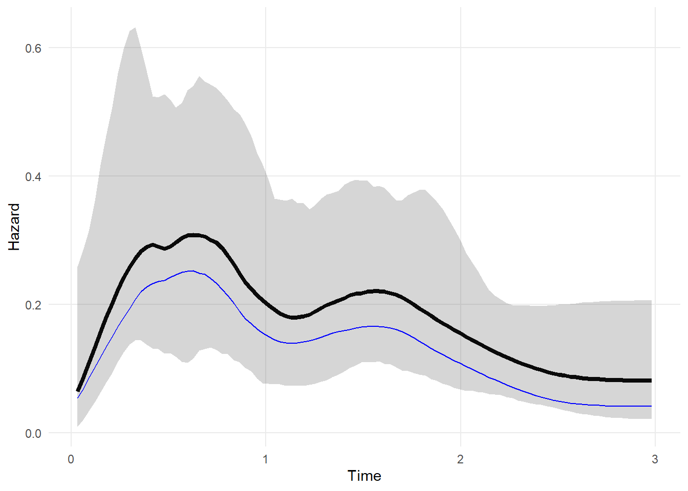
Comparison with other ways of supplying external data in survextrap
An alternative approach to modelling a study population and a
background population in survextrap would be to estimate
the background hazard from external aggregate data supplied as an
external argument. A covariate would be included which
takes a different value between the external data and the study data. By
default, the hazards would then be assumed to be proportional between
the study population and external population. Proportional hazards would
be a restrictive assumption, however. The flexible nonproportional
hazards model might be preferable.
The advantage of this alternative approach would be to account for
uncertainty about the background hazard. If the background hazard is not
uncertain, however, then the standard relative survival model would be
adequate, as the excess hazard is modelled flexibly. In theory, another
way to account for uncertainty in backhaz would be to place
independent priors on each of the backhaz terms (without
modelling backhaz as a parametric function of time) though
this is not currently implemented.